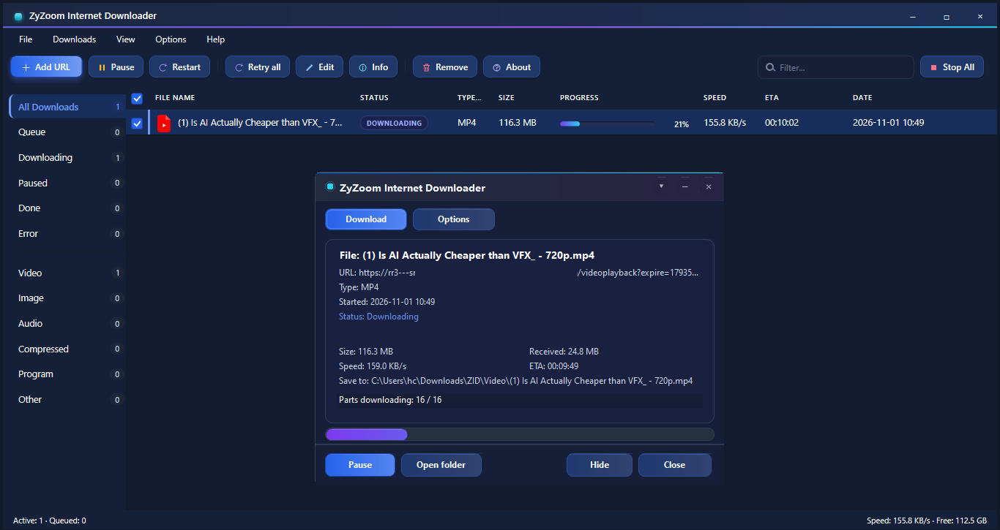

Fast, crash-proof downloads for Windows
A small native download manager that drives aria2 in the background, keeps a queue, survives crashes and network drops, and takes over links from your browser.

What's new in 1.0
- First public release — free, no ads, no registration.
- Up to 16 parallel connections per file, with pause, resume and stop.
- Crash-safe queue: atomic saves, a backup file, and recovery after a kill or power cut.
- Browser hand-off for Chrome, Edge, Chrome 109 and Firefox, plus MP4 merging with mp4mux.
Built for connections that give up
Every part of ZID assumes the network will fail at some point — and makes that a non-event.
Multi-connection speed
Up to 16 parallel connections per file through aria2, with pause, resume and stop at any moment.
Crash-safe queue
Atomic saves and a backup file. A killed process or a power cut resumes exactly where it stopped.
Browser hand-off
Chrome, Edge, Chrome 109, Firefox and the clipboard send links over ws://127.0.0.1:10007.
Retry that works
Automatic retry with backoff, a live network monitor, and resume the second the connection returns.
Video and audio
Detects media links, pairs subtitles and merges MP4 parts with the bundled mp4mux.
Small and offline
A 300 KB native app, 20 interface languages, light and dark themes, nothing to install at runtime.
Three steps, two minutes
No account, no bundled toolbars, no telemetry.
Download the setup
Grab setup_1.0.exe — 3.6 MB, signed with the app icon and version info.
Run the installer
Windows 7 SP1 or newer, administrator rights. It registers the zid:// protocol.
Start downloading
Open ZID from the Start menu or the desktop shortcut and paste a link.
Pick your build
Free, no ads, no registration.
Windows installer
Download setup_1.0.exeFirefox add-on
Get the extensionChrome, Edge and Chrome 109 extensions ship inside the installer. The Firefox XPI is unsigned: load it from about:debugging or use Firefox Developer Edition.